전자계산기제어산업기사(구) (2007-09-02 기출문제)
1과목: 프로그래밍일반
1. 수식 구문의 표현법 중 피연산자를 먼저 표기하고 연산자를 나중에 표기하는 방법은?
- Prefix Notation
- Infix Notation
- Postfix Notation
- Outfix Notation
(정답률: 알수없음)

2. 시스템 프로그래밍 언어에 가장 적합한 것은?
- PAPSCAL
- COBOL
- C
- BASIC
(정답률: 알수없음)
3. 인터프리터 기법에 대한 설명으로 거리가 먼 것은?
- 융통성을 강조한 처리 기법이다.
- 정적 자료 구조이다.
- 명령 단위별로 번역 즉시 실행한다.
- BASIC은 인터프리터 기법에 해당하는 언어이다.
(정답률: 알수없음)
4. 언어의 구문 요소 중 프로그램을 작성하는 과정에서 컴퓨터에 의하여 직접 실행되는 명령어가 아니며, 프로그램을 이해하기에 도움이 되는 내용들을 기록한 것을 무엇이라고 하는가?
- 예약어
- 주석
- 구분 문자
- 문장
(정답률: 알수없음)
5. 다음 중 프로그램 수행 순서로 옳은 것은?
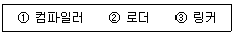
- ② → ① → ③
- ① → ② → ③
- ① → ③ → ②
- ③ → ① → ②
(정답률: 알수없음)
6. C언어에서 문자형 자료 선언시 사용하는 자료형은?
- char
- int
- float
- double
(정답률: 알수없음)
7. 구문 분석의 결과물로 구문 분석기가 올바른 문장에 대해 문장의 구조를 트리 형식으로 표현한 것은?
- 파스 트리
- 분석 트리
- 구조 트리
- 정의 트리
(정답률: 알수없음)
8. C 언어에서 사용하는 기억클래스의 종류가 아닌 것은?
- 자동 변수
- 내부 변수
- 레지스터 변수
- 정적 변수
(정답률: 알수없음)
9. 기계어의 설명으로 거리가 먼 것은?
- 프로그램의 실행 속도가 빠르다.
- 프로그램의 유지 보수가 용이하다.
- 호환성이 없고 기계마다 언어가 다르다.
- 2진수를 사용하여 데이터를 표현한다.
(정답률: 알수없음)
10. 예약어(Reserved word)에 대한 설명으로 거리가 먼 것은?
- 프로그램에서 변수명으로 사용할 수 없다.
- 번역 과정에서 속도를 높여준다.
- 프로그램의 신뢰성을 향상시켜줄 수 있다.
- 새로운 언어에서는 예약어의 수가 줄어들고 있다.
(정답률: 알수없음)
11. 절대로더에서 기능과 그 행위 주체의 연결이 옳지 않은 것은?
- 기억 장소 할당 – 프로그래머
- 연결 – 로더
- 재배치 – 어셈블러
- 적재 – 로더
(정답률: 알수없음)
12. 시간 구역성의 예가 아닌 것은?
- 배열 순례(array traversal)
- 순환(looping)
- 부프로그램(subprogram)
- 집계(totaling) 등에 사용되는 변수
(정답률: 알수없음)
13. 순서 제어 구조에서 묵시적인 방법에 해당하는 것은?
- 반복문을 사용하는 방법
- GOTO문을 사용하는 방법
- 연산자의 우선 순위에 따른 수식 계산
- 연산자의 순서를 프로그래머가 변경하는 방법
(정답률: 알수없음)
14. 정규표현(Regular Expression)을 받아들이는 효율적인 오토마타(automata)는?
- 유한 상태 오토마타
- 푸쉬다운 오토마타
- 튜링 머쉰
- 선형 제한 오토마타
(정답률: 알수없음)
15. 시스템 소프트웨어 중 기계어로 번역된 목적 프로그램을 실행하기 위해 주기억장치로 적재하는 것은?
- 어셈블러
- 매크로 프로세서
- 링커
- 로더
(정답률: 알수없음)
16. 인터럽트의 종류 중 프로그래머에 의해 발생하는 인터럽트로서 보통 입출력의 수행, 기억장치의 할당 및 오퍼레이터와의 대화 등의 작업 수행시 발생하는 것은?
- 입·출력 인터럽트
- 외부 인터럽트
- 기계 검사 인터럽트
- SVC 인터럽트
(정답률: 알수없음)
17. 다음 프로그램언어의 문장구조 중 성격이 다른 하나는?
- while(expression) statement;
- for(expression-1; expression-2; expression-3) statement;
- if(expression) statement-1; else statement-2;
- do {statement;} whlie(expression);
(정답률: 알수없음)
18. 운영체저의 성능 평가요소에 아닌 것은?
- 비용
- 반환 시간
- 신뢰도
- 처리 능력
(정답률: 알수없음)
19. 고급 언어에 대한 설명으로 옳지 않은 것은?
- 사람 중심의 언어이다.
- 상이한 기계에서 별다른 수정 없이 실행 가능하다.
- 번역 과정 없이 실행 가능하다.
- C, COBOL 등의 언어는 고급 언어에 해당한다.
(정답률: 알수없음)
20. BNF 기호 중 정의를 의미하는 것은?
- ::=
- ＜＞
- |
- #
(정답률: 알수없음)
2과목: 전자계산기구조
21. 레지스터에 저장되어 있는 몇 개의 비트를 1로 하기 위해서는 그 장소에 x를 데이터에 y연산을 하면 된ㄷ. 이때 x와 y는?
- x = 0, y = AND
- x = 1, y = AND
- x = 1, y = OR
- x = 0, y = OR
(정답률: 알수없음)
22. 다음 중 비가중치 코드(Non-weighted code)는?
- 51111 코드
- 2421 코드
- 8421 코드
- 3초과 코드
(정답률: 알수없음)
23. 2진수 1011010을 8진수로 올바르게 변환시킨 것은?
- 132
- 123
- 124
- 142
(정답률: 알수없음)
24. N개의 입력 데이터에서 입력선을 선택하여 단일 채널로 송신하는 것은?
- 인코더
- 감산기
- 전가산기
- 멀티플렉서
(정답률: 알수없음)
25. 연산 후 입력자료가 보존되는 컴퓨터의 유형은?
- 0 Address 방식
- 1 Address 방식
- 2 Address 방식
- 3 Address 방식
(정답률: 알수없음)
26. 인덱스 레지스터(index register)의 사용 목적이 아닌 것은?
- 어드레스(address) 수정
- 반복 계산 수행
- 서브루틴(shbroutine) 연결
- 입·출력
(정답률: 알수없음)
27. 다음과 같이 세 개의 마이크로 동작(micro operation)이 이루어졌을 경우에 이 동작이 끝났을 때 A 레지스터 상태는?
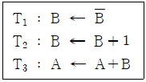
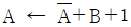
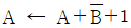
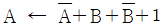
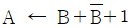
(정답률: 알수없음)
28. 다음 중 인터럽트와 관계 없는 것은?
- daisy chain
- polling
- stack
- DMA
(정답률: 알수없음)
29. 주기억 장치에서 접근 시간(access time)을 가장 옳게 설명한 것은?
- 판독 신호(read signal)를 발생한 후 자료를 메모리 주소 레지스터에 옮기는데 까지의 시간
- 판독 신호 발생 후 자료를 메모리 버퍼 레지스터에 옮기는데 까지의 시간
- 메모리 주소 레지스터의 내용을 메모리 버퍼 페지스터로 옮기는데 까지의 시간
- 판독 신호를 발생한 후 다음 판독 신호가 발생할 때 까지의 시간
(정답률: 알수없음)
30. B000H 번지에서 DAFFH 번지 까지의 메모리 영역은 모두 몇 페이지(page)인가? (단, 100H = 1page 임)
- 23
- 33
- 43
- 53
(정답률: 알수없음)
31. 자료의 상한치와 하한치를 미리 정해두고 입력되는 자료와 비교하여 그 범위 안에 있는지를 검사(check) 하는 것은?
- Format check
- Sequence check
- Limit check
- Logical check
(정답률: 알수없음)
32. 2진수 1010(2)을 그레잊(Gray) 코드로 변환한 것으로 옳은 것은?
- 1111
- 1001
- 1011
- 1101
(정답률: 알수없음)
33. 간접주소 지정방식에 대한 설명 중 틀린 것은?
- 인스트럭션의 길이가 짧아진다.
- 다른 방식보다 신속하게 처리된다.
- 용량이 큰 기억장치에 대한 주소지정에 적합하다.
- 기억장치에 최소 두 번 접근해야 오퍼랜드를 얻을 수 있다.
(정답률: 알수없음)
34. tri-state buffer 의 기능을 올바르게 설명한 것은?
- 여러 개의 어드레서 선을 입력으로 받아 하나의 출력만을 동작시킨다.
- enable될 경우 논리적 기능을 갖추며, dlsable되면 고임피던스 상태가 되어 회로가 끊어진 상태가 된다.
- CPU의 내부 구성 요소로써 데이터 저장기능을 수행한다.
- 레지스터 값의 일시적인 대피 및 복귀기능을 가지고 있다.
(정답률: 알수없음)
35. 명령어 수행 시 주기억장치로부터 CPU 내의 인스트럭션 레지스터(IR)로 명령어를 읽어와야 한다. 이 때 주기억장치와 IR 사이의 중간자적인 역할을 담당하는 것은?
- PC
- ALU
- MAR
- MBR
(정답률: 알수없음)
36. 상대 주소 지정 방식(relative addressing mode)에 가장 많이 쓰이는 명령어는?
- 분기 명령어
- 전달 명령어
- 감산 명령어
- 입·출력 명령어
(정답률: 알수없음)
37. 메모리 계층(hierarchy)에서 캐시 메모리로 주로 사용되는 것은?
- ROM
- DRAM
- SRAM
- VRAM
(정답률: 알수없음)
38. 동기 고정식 마이크로 오퍼레이션 제어의 특성을 설명한 것이 아닌 것은?
- 중앙처리장치의 시간 이용이 비효율적이다.
- 여러 종류의 마이크로 오퍼레이션의 수행 시 CPU 사이클타임이 실제적인 오퍼레이션 시간보다 길다.
- 제어장치의 구현이 간단하다.
- 마이크로 오퍼레이션이 끝나고 다음 오퍼레이션이 수행 될 때까지 시간 지연이 있게 되어 CPU 처리속도가 느려진다.
(정답률: 알수없음)
39. 페이징(paging) 기법과 관계있는 것은?
- CAM(Content Addressable Memory)
- Cache Memory
- Virtual Memory
- Associative Memory
(정답률: 알수없음)
40. 캐시 메모리에서 사용하지 않는 매핑(mapping) 방법은?
- direct mapping
- database mapping
- associative mapping
- set-associative mapping
(정답률: 알수없음)
3과목: 마이크로전자계산기
41. 다음 중 10진수 45를 BCD 코드로 옳게 나타낸 것은?
- (00111001)BCD
- (01110001)BCD
- (00110011)BCD
- (01000101)BCD
(정답률: 알수없음)
42. 프로그램 상의 오류나 컴퓨터의 고장에 의해서 정보처리가 중지되는 경우 회복에 사용할 올바른 정보를 저장하는 레지스터는?
- 대기 레지스터(Standby register)
- 순서 레지스터(Sequence register)
- 프로그램 레지스터(Program register)
- 인덱스 레지스터(Index register)
(정답률: 알수없음)
43. 다음 중 μ-processor에 포함되어 있지 않은 것은?
- ALU
- Program counter
- DMA
- Accumulator
(정답률: 알수없음)
44. 다음 중 산술연산시 레지스터의 데이터 값을 2배로 증가시키기 위한 명령어는?
- SHL(Shift Left)
- SHR(Shift Right)
- INC(Increment)
- ROR(Rotate Right)
(정답률: 알수없음)
45. 동적(dynamic) RAM과 비교하여 정적(static) RAM 의 특징으로 옳은 것은?
- 소비 전력이 적다.
- 동작 속도가 빠르며, 집적도가 높다.
- 대용량의 메모리에 사용된다.
- 재생할 수 있는 refresh pulse를 공급 받을 필요가 없다.
(정답률: 알수없음)
46. 시행 중인 프로그램을 다른 컴퓨터의 연산자로 구성된 프로그램으로 번역하는 프로그램은?
- high level 컴파일러
- 체크 리스트
- 서브 프로그램
- 크로스 어셈블러
(정답률: 알수없음)
47. 명령(Instruction)의 기본 구성 요소에 관계 없는 것은?
- Operand
- Mode bit
- OP-Code
- Linker
(정답률: 알수없음)
48. 마이크로프로세서와 RAM들을 접속하기 위하여 사용되는 것은?
- decoder
- multiplexer
- encoder
- flip-flop
(정답률: 알수없음)
49. 컴퓨터 입·출력 방식 중에서 가장 고성능 방식에 해당하는 것은?
- DMA 제어기에 의한 입·출력
- 채널 제어기에 의한 입·출력
- CPU에 의한 입·출력 인터럽트 방식
- CPU에 의한 입·출력 프로그램 방식
(정답률: 알수없음)
50. 다음 중 입·출력 기능 중 아날로그 입력 데이터를 디지털 신호로 바꾸어 주는 기능은?
- 전송 기능
- 변솬 기능
- A/D 변환 기능
- D/A 변환 기능
(정답률: 알수없음)
51. 다음 중 컴퓨터의 누산기(Accumulator)에 대한 설명으로 옳지 않은 것은?
- ALU에 의해 수행되는 연산에 관여하며 연산의 결과를 저장한다.
- 입·출력 장치로 데이터를 보낼 때 임시저장 레지스터로도 쓰인다.
- 일반적으로 마이크로 프로세서의 워드 크기와 같은 비트 수를 갖는다.
- 현재 수행되는 연산에 사용되는 메모리 위치 또는 I/O 장치의 어드레스를 저장한다.
(정답률: 알수없음)
52. 다음이 설명하는 용어로 옳은 것은?
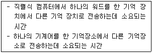
- Shift Time
- Transfer Time
- Control Time
- Word Time
(정답률: 알수없음)
53. 격리형 I/O 방식과 비교하여 Memory Mapped I/O 방식의 특징이 아닌 것은?
- 기억 장치의 일부 공간을 입·출력 포트에 할당한다.
- 별도의 입·출력 명령이 필요 없다.
- 기억장치의 이용효율이 높다.
- 기억장치주소와 입·출력장치 주소의 구별이 없다.
(정답률: 알수없음)
54. 고급 언어를 기계어로 바꿔주는 번역기를 무엇이라 하는가?
- editor
- compiler
- assembler
- operating system
(정답률: 알수없음)
55. 다음 중 DASD(Direct Access Storage Device)로 랜덤 액세스가 가장 적합한 것은?
- 자기 디스크
- 자기 테이프
- VSAM
- ISAM
(정답률: 알수없음)
56. 다음 ( ) 안에 가장 적합한 것은?
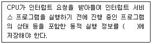
- 스택
- 실행 큐
- 프로그램 배열
- 상태 레지스터
(정답률: 알수없음)
57. 컴퓨터가 프로그램을 수행하던 중 예기치 않은 일이 발생하여 현재 수행 중인 프로그램이 일시적으로 중지되는 상태를 무엇이라 하는가?
- Polling
- Handshaking
- PSW(Program Status Word)
- Interrupt
(정답률: 알수없음)
58. 다음의 명령어 중 레지스터에 저장되어 있는 데이터를 지정된 메모리 번지로 옮기기 위한 명령어는?
- 로드 명령어(load instruction)
- 스토어 명령어(store instruction)
- 입력 명령어(input instruction)
- 분기 명령어(branch instruction)
(정답률: 알수없음)
59. 마이크로프로세서에서 RS-232C의 용도는?
- 스탭 모터 드라이버
- LCD 모듈 드라이버
- 시리얼 통신 인터페이스
- A/D 컨버터
(정답률: 알수없음)
60. 다음 중 마이크로 컨트롤러를 사용하여 제품을 만들 경우 장점이 아닌 것은?
- 소형화
- 고가격
- 융통성
- 신뢰성
(정답률: 알수없음)
4과목: 논리회로
61. 레지스터 A에 11011001 이 들어있다. 레지스터 A의 내용이 01101101 으로 바뀌었다면 레지스터 B의 내용과 A, B에 수행된 논리 마이크로 작동은? (단, B는 10110100 의 내용을 가지고 있다.)
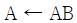
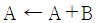
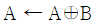
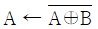
(정답률: 알수없음)
62. 다음 회로가 수행할 수 있는 논리 기능은?
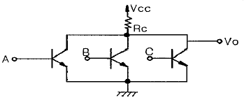
- NOT
- NOR
- AND
- OR
(정답률: 알수없음)
63. 다음과 같은 기호를 논리 기호로 표시하면?
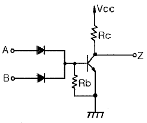
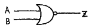
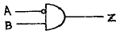
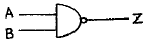
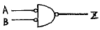
(정답률: 알수없음)
64. 다음 논리회로가 의미하는 것은?
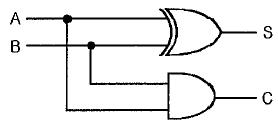
- 일치회로
- 2진 비교기
- 반가산기
- 전가산기
(정답률: 알수없음)
65. 다음에 수행할 명령의 주소를 기억하고 있는 레지스터는?
- Program Counter
- Instruction Register
- Accumulator
- Status Register
(정답률: 알수없음)
66. 다음과 같은 구성도는 어떤 형태의 플립플롭인가?
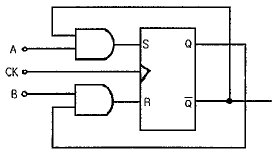
- D형
- M/S형
- JK형
- T형
(정답률: 알수없음)
67. 다음 중 자보수(self-complementary) 특성을 가진 코드는?
- BCD 코드
- 3-초과(excess-3) 코드
- 그레이(Gray) 코드
- 5421 코드
(정답률: 알수없음)
68. 1001111의 2의 보수를 구하면?
- 0110001
- 0001111
- 0111110
- 0110000
(정답률: 알수없음)
69. 212 × 6 ROM이 있다. 이 ROM의 입력 신호와 1 WORD 당 비트 수는?
- 2개, 12비트
- 6개, 6비트
- 6개, 12비트
- 12개, 6비트
(정답률: 알수없음)
70. 플립플롭(filp flop) 중에서 입력 상태가 그대로 출력되는 것은?
- RS 플립플롭
- D 플립플롭
- JK 플립플롭
- T 플립플롭
(정답률: 알수없음)
71. 시간 폭이 매우 좁은 트리거 펄스 열이 입력단에 가해진다면, 이 펄스가 나타나는 순간마다 출력 상태가 바뀌는 플립플롭은?
- JK 플립플롭
- T 플립플롭
- RS 플립플롭
- D 플립플롭
(정답률: 알수없음)
72. 한 플립플롭의 출력이 다른 플립플롭을 구동시키는 계수기는?
- 링 계수기
- 존슨 계수기
- 10진 계수기
- 리플 계수기
(정답률: 알수없음)
73. 10진수 943을 3초과 코드로 표시하면?
- 110101100010
- 100101000011
- 111001000101
- 110001110110
(정답률: 알수없음)
74. 다음 불(Boolean) 식을 간단히 한 결과 Y는?
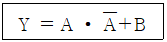
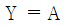
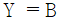
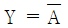
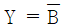
(정답률: 알수없음)
75. 조합 논리회로에 대한 설명으로 옳은 것은?
- 입력신호, 논리게이트, 출력신호로 이루어졌다.
- 입력신호, 논리게이트, 메모리, 출력신호로 이루어졌다.
- 입력신호, 논리게이트, 메모리, 출력신호, 이전상태로 이루어졌다.
- 입력신호, 논리게이트, 메모리, 출력신호, 이전신호, 상태 출력으로 이루어졌다.
(정답률: 알수없음)
76. 다음 논리회로를 간단히 하면?
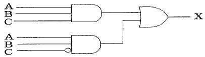
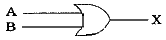
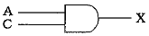
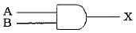
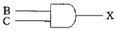
(정답률: 알수없음)
77. 다음 회로가 나타내는 것은?
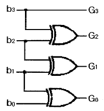
- 2진수를 그레이코드로 변환하는 회로
- 3초과 코드를 2진수로 변환하는 회로
- 입력비트의 크기를 검사하는 회로
- 1의 자리를 검출하는 회로
(정답률: 알수없음)
78. 정보를 일시적으로 유지하는데 사용되는 플립플롭은?
- T
- D
- MS
- JK
(정답률: 알수없음)
79. 다음 계수기의 명칭으로 옳은 것은?
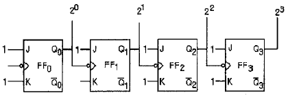
- 4비트 2진 하향 비동기 계수회로
- 3비트 2진 하향 비동기 계수회로
- 4비트 2진 상향 비동기 계수회로
- 3비트 2진 상향 비동기 계수회로
(정답률: 알수없음)
80. 입력 펄스에 따라 미리 정해진 순서대로 상태가 변화하는 레지스터로서 발생 횟수를 세거나 동작 순서를 제어하기 위한 타이밍(timing) 신호를 만드는데 가장 적합한 회로는?
- 범용 레지스터
- 멀티플렉서
- 카운터
- 스택
(정답률: 알수없음)
5과목: 정보통신개론
81. 동일 건물이나 인접한 건물에 있는 다양한 컴퓨터 기기들을 상호 연결하여 정보통신망에 연결된 다른 기기나 주변 기기들과 공유할 수 있도록 설계하는 네트워크는?
- 패킷교환망(PSDN)
- 부가가치통신망(VAN)
- 근거리통신망(LAN)
- 공중전화망(PSTN)
(정답률: 알수없음)
82. 이동통신망에서 사용되는 다원접속(Multiple Access)방식이 아닌 것은?
- CDMA
- CSMA
- TDMA
- FDMA
(정답률: 알수없음)
83. 다음 중 정보통신시스템의 데이터 전송계에 해당되지 않는 것은?
- 전송회선
- 단말장치
- 주변장치
- 통신제어장치
(정답률: 알수없음)
84. TV전파를 이용하여 필요한 문자나 도형 정보를 텔레비전 수상기의 화면상에서 볼 수 있는 것은?
- 텔리텍스트
- 텔리메터링
- 텔리비디오
- 텔리타이프
(정답률: 알수없음)
85. 다음 중 동기식 전송방식의 일반적인 특성과 관계 없는 것은?
- 전송속도가 비교적 빠르다.
- 단말기는 버퍼 기억장치를 갖고 있다.
- 송·수신의 동기를 위하여 동기문자가 사용된다.
- 항상 한 묶음으로 구성된 문자 사이의 휴지간격이 존재한다.
(정답률: 알수없음)
86. OSI-7 참조 모델에서 각 계층의 기능이 잘못 연결된 것은?
- 표면계층 : 정보의 형식 설정과 코드 변환
- 네트워크계층 : 정보 교환과 중계 기능
- 응용계층 : 회화 단위의 제어
- 물리계층 : 전송 매체로의 적니적 신호 전송
(정답률: 알수없음)
87. 다음 데이터 통신 용어의 설명 중 틀린 것은?
- repeater – 신호의 감쇠 현상을 복원해 준다.
- modem – 신호의 변·복조장치를 뜻한다.
- bps – 초당 전송 비트 수를 뜻한다.
- baud – 초당 저장 바이트 수를 뜻한다.
(정답률: 알수없음)
88. 위성통신의 특징을 잘못 표현한 것은?
- 광대역 통신이 가능하다.
- 광범위한 지역에 서비스를 제공할 수 있다.
- 대용량, 고품질의 정보 전송이 가능하다.
- 전파지연이 없으나 감쇠 현상이 나타날 수 있다.
(정답률: 알수없음)
89. 다음 중 데이터 전달을 위한 순서적 절차로 알맞은 것은?
- 링크확립 – 회로연결 – 메시지전달 – 회로절단 – 링크절단
- 회로연결 – 링크확립 – 메시지전달 – 회로절단 – 링크절단
- 회로연결 – 링크확립 – 메시지전달 – 링크절단 – 회로절단
- 링크확립 – 회로연결 – 메시지전달 – 링크절단 – 회로절단
(정답률: 알수없음)
90. OSI 참조 모델의 각 계층과 이에 해당되는 인터넷 프로토콜에 대한 연결로 틀린 것은?
- 데이터링크계층 – UDP
- 네트워크계층 – IP
- 전송계층 – TCP
- 응용계층 – FTP
(정답률: 알수없음)
91. 다음 중 주로 OSI의 네트워크 계층까지의 기능을 수행하는 것은?
- 아답터
- 브릿지
- 라우터
- 리피터
(정답률: 알수없음)
92. 프로토콜의 구성 요소 중 전소제어 및 오류 처리를 위한 정보 등을 규정하는 것은?
- 구문(syntax)
- 의미(semantic)
- 타이밍(timing)
- 흐름제어(flow control)
(정답률: 알수없음)
93. 다음 중 네트워크 토폴로지의 종류에 속하지 않는 것은?
- 성형
- 버스형
- 링형
- 분산형
(정답률: 알수없음)
94. 다음 중 흐름제어, 에러제어 및 자체 진단기능을 갖는 일명 지능다중화기는?
- 통계적시분할 다중화기
- 시분할 다중화기
- 주파수분할 다중화기
- 역다중화기
(정답률: 알수없음)
95. 어떤 회사가 8개의 장치를 망형 네트워크로 할 경우 최소로 필요한 케이블의 연결수(C)는?
- C = 28
- C = 26
- C = 24
- C = 22
(정답률: 알수없음)
96. 통화 중에 이동전화가 한 셀에서 다른 셀로 이동할 때, 자동으로 현 통화 채널을 다른 셀의 통화 채널로 전환해 줌으로써 통화가 지속되게 하는 기능은?
- 핸드오프
- 전자기 간섭
- 진폭 변조
- 주파수 변조
(정답률: 알수없음)
97. 다음 중 IEEE 802.15 관련 방이나 거실과 같은 작은 지역에서 장치들을 연결시키는 근거리 무선통신 기술은?
- 블루투스
- VPN
- WAN
- 종합정보통신망
(정답률: 알수없음)
98. 프로토콜의 기능 중 정보 전송시 데이터 및 제어 정보의 오류에 대비하기 위한 것은?
- 연결제어
- 에러제어
- 흐름제어
- 동기제어
(정답률: 알수없음)
99. 다음 중 두 개의 채널간에 보호대역(guard band)을 사용하여 인접한 채널간의 간섭을 막아주는 다중화방식은?
- 시분할다중화방식
- 주파수분할다중화방식
- 코드분할다중화방식
- 공간분할다중화방식
(정답률: 알수없음)
100. 광대역 통신망 ATM 셀(Cell)의 구성으로 알맞은 것은?
- 헤더 5바이트, 페이로드(Payload) 53바이트
- 헤더 4바이트, 페이로드(Payload) 53바이트
- 헤더 5바이트, 페이로드(Payload) 48바이트
- 헤더 4바이트, 페이로드(Payload) 48바이트
(정답률: 알수없음)